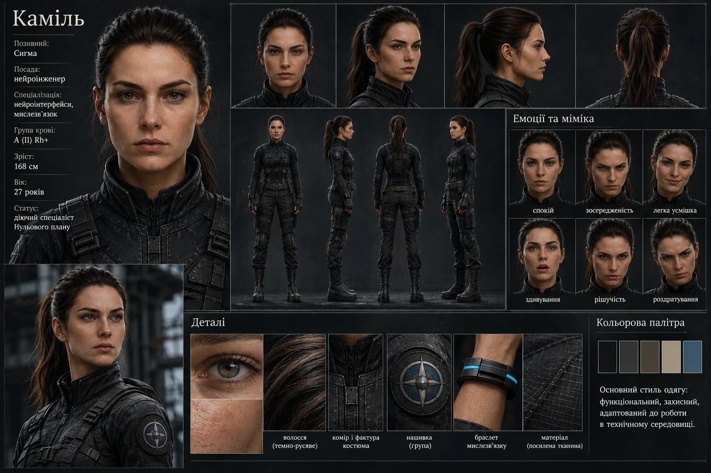

ОСНОВНА ІНФОРМАЦІЯ
Нейроінженерка та дослідниця чужих систем
Каміль, позивний Сигма, — нейроінженерка, яка входить до постійної розвідувальної команди Евігіда разом із пілотом Мішелем. Її робота пов’язана з аналізом сканувань, нейроінтерфейсами, мислезв’язком і дослідженням складних технічних систем.
Ім’я: Каміль
Позивний: Сигма
Посада: нейроінженерка
Спеціалізація: нейроінтерфейси, мислезв’язок
Вік: 27 років (за наданим візуальним досьє)
Зріст: 168 см (за наданим візуальним досьє)
Група крові: A (II) Rh+ (за наданим візуальним досьє)
Походження: у перевірених уривках не уточнене
ІСТОРІЯ ТА ХАРАКТЕР
Уважність до деталей і дослідницький підхід
Каміль працює в команді, члени якої добре знають одне одного й мають тривалий досвід спільних операцій. Під час розвідки вона аналізує дані сканерів, першою помічає ознаки біологічної активності та формує технічні висновки на основі спостережень.
У рукописах її характер розкривається насамперед через професійну поведінку: уважність, технічну компетентність, обережність у висновках і готовність перевіряти гіпотези.
НАВИЧКИ ТА СПЕЦІАЛІЗАЦІЯ
Нейроінтерфейси й біоорганічні технології
Під час дослідження планети, захопленої прибульцями, Каміль працює зі скануваннями та виявляє біологічну активність у незвичній системі тераформування. Пізніше, після орбітальної битви, вона бере участь у дослідженні захопленого корабля.
Каміль аналізує його органічні провідники та енергетичну систему, працює з інженерами над проміжним інтерфейсом між людською електронікою й чужою біосистемою та коригує параметри керування.
ПОДІЇ ТА ВЗАЄМИНИ
Команда Евігіда
- Постійна учасниця розвідувальної команди Евігіда; працює разом із ним і пілотом Мішелем.
- Бере участь у місії на планету, нещодавно захоплену прибульцями, де допомагає дослідити сліди їхньої діяльності.
- Після битви на орбіті Землі долучається до обстеження уламків і дослідження майже неушкодженого корабля прибульців.
- Допомагає розшифровувати схеми живлення та створювати інтерфейс для взаємодії з біосистемами корабля.
Що не підтверджено рукописами
Країна походження, родина, домінантна рука, точні риси характеру поза робочими ситуаціями та особисті стосунки не встановлені. Ці відомості не додані.